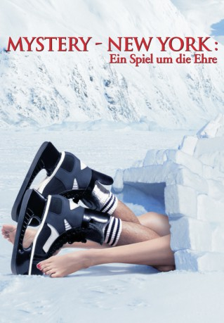
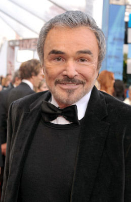
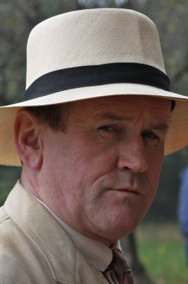
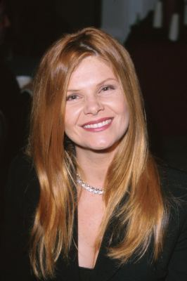
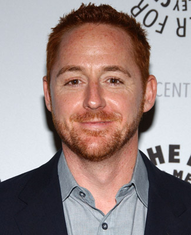
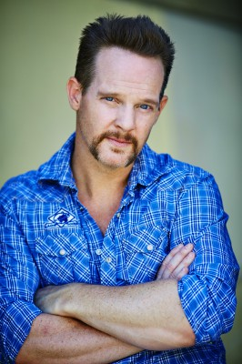
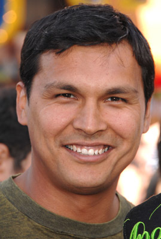
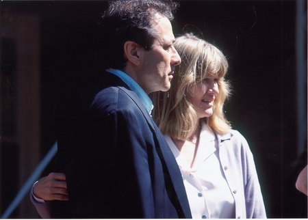
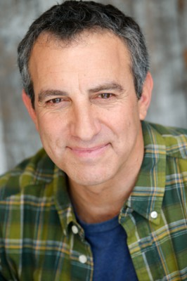
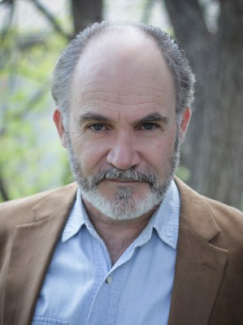

#5476 Mystery - New York: Ein Spiel um die Ehre
 
 IMDB-Wertung: 6.7 / 10
IMDB-Wertung: 6.7 / 10  Metascore: 0
Metascore: 0 
Im kleinen Örtchen Mystery in Alaska wird an jedem Samstag Eishockey auf dem örtlichen vereisten See gespielt. Eines Tages wird man in der "Sports Illustrated" erwähnt und dadurch erhält das Team plötzlich die Chance ihres Lebens. Die Profieishockeyspieler der New York Rangers wollen gegen die Amateurmannschaft spielen. Zusammen mit Richter Burns will Spieler und Sheriff der Stadt John Biebe die Mannschaft auf das Spiel ihres Lebens vorbereiten...
Jahr: 1999
Dauer: 118 Minuten
FSK: 6
Land: Kanada Studio: BVHETonspuren:
Untertitel: Deutsch, Englisch,
Auflösung: 1080p (1920x816) Größe: 9512 MB
Genre: Drama, Komödie, Sport
Regisseur: Jay Roach
Drehbuch: Helen Frost
Soundtrack:
Darsteller:
 Russell Crowe als John Biebe
Russell Crowe als John Biebe Hank Azaria als Charles Danner
Hank Azaria als Charles Danner- Mary McCormack als Donna Biebe
-  Burt Reynolds als Judge Walter Burns
-  Colm Meaney als Mayor Scott Pitcher
-  Lolita Davidovich als Mary Jane Pitcher
 Maury Chaykin als Bailey Pruitt
Maury Chaykin als Bailey Pruitt- Ron Eldard als 'Skank' Marden
- Ryan Northcott als Stevie Weeks
- Michael Buie als Connor Banks
 Kevin Durand als 'Tree' Lane
Kevin Durand als 'Tree' Lane-  Scott Grimes als 'Birdie' Burns
-  Jason Gray-Stanford als Bobby Michan
 Brent Stait als Kevin Holt
Brent Stait als Kevin Holt-  Adam Beach als Galin Winetka
- Cameron Bancroft als 'Tinker' Connolly
 Michael McKean als Mr. Walsh
Michael McKean als Mr. Walsh- Rachel Wilson als Marla Burns
- Beth Littleford als Janice Pettiboe
- Megyn Price als Sarah Heinz
-  Judith Ivey als Joanne Burns
 Mike Myers als Donnie Shulzhoffer
Mike Myers als Donnie Shulzhoffer- Betty Linde als Mirabelle Houle
- Little Richard als Himself
- Matt Clarke als Joe
- Shaun Johnston als D.A. Dollof
- Karen Gartner als Jury Foreman
-  Bruce Nozick als NHL Lawyer
 Gerry Becker als Players' Union Lawyer
Gerry Becker als Players' Union Lawyer L. Scott Caldwell als Judge McGibbons
L. Scott Caldwell als Judge McGibbons-  David LeReaney als Howard Sebron , scenes deleted
- Harold L. Brown als Hockey Fan , uncredited
- Tie Domi als Himself , archive footage, uncredited
- Tara Howie als Spectator , uncredited
- Tom Miller als TV Assistant Director , uncredited
- Leroy Peltier als Ben Winetka
- Stephen Hair als Jack Danby
- Joshua Silberg als Michael Biebe
- Regan Sean O'Byrne Macelwain als Joey Biebe
- Terry David Mulligan als Dr. Henry Savage
- Rod Jarvis als Referee
- Lindsay Jarvis als Linesman
- Jim Fox als Himself
- Doug McLeod als Himself
- Phil Esposito als Himself
- Randall Arney als TV Director
- Gary Murdoch als Bodyguard
- Genevieve Fraser als Student Charlotte
- Taylor Smith als Student Tommy
- Scott Olynek als Bob
Datei: X:\1999\Mystery - New York Ein Spiel um die Ehre (1999, FSK6, 1920x816).mkv seit 05.02.2017
Festplatte: HD 1996-2002
 Es gibt insgesamt 81 Filme in der Gruppe '1999'
Es gibt insgesamt 81 Filme in der Gruppe '1999'